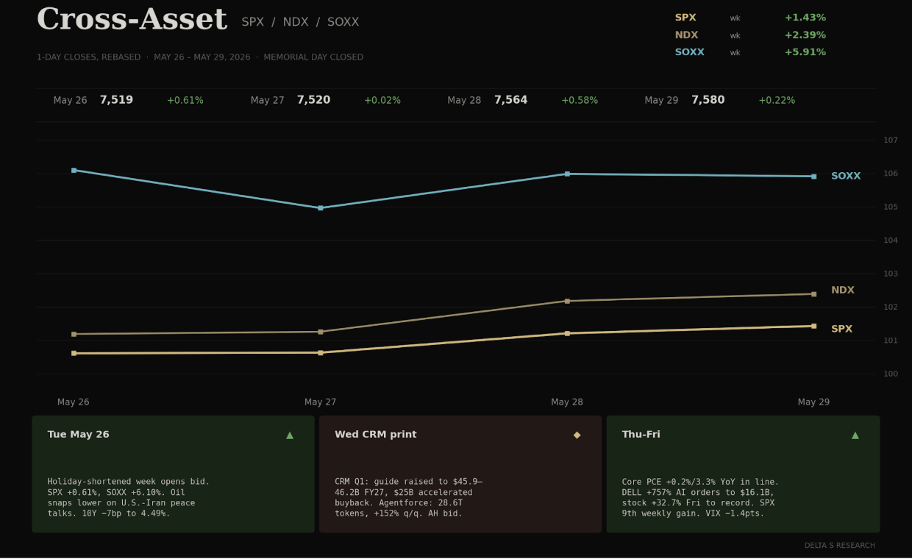
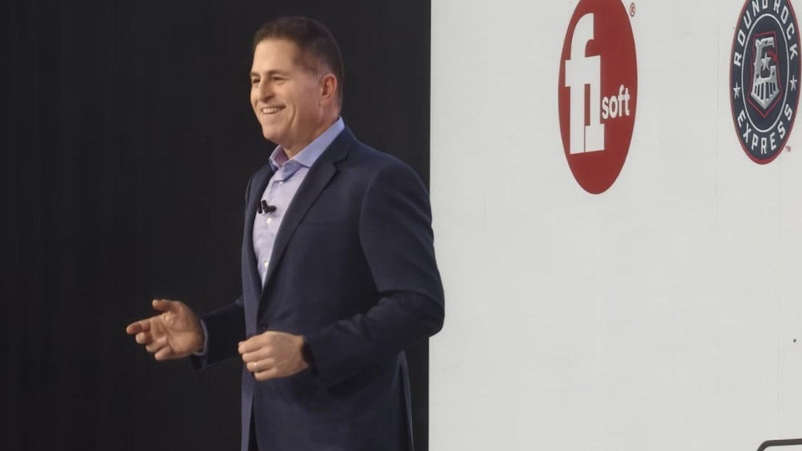
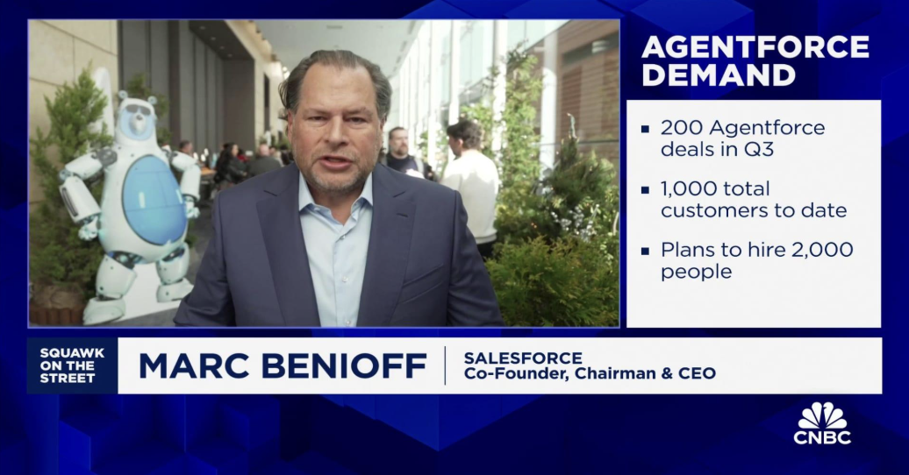

- Four-day, holiday-shortened week. SPX printed a ninth consecutive weekly gain (+1.43% to 7,580.05) — the longest streak since 2004. NDX +2.39%. SOXX +5.91%. Dow +0.89% to 51,032.46.
- The marginal bid was not earnings or PCE. It was the U.S.-Iran peace pivot that knocked WTI from $96.60 to $87.36 (-9.6%) and let the curve grind 11bp lower on the 10Y to 4.45%, 30Y to 4.99%.
- VIX closed Friday at 15.32 — a fresh six-week low. The compression is happening into a tape sitting at fresh records with Warsh in his first full week, Hormuz still hostage to a fragile deal, and a savings rate at a four-year low.
- DELL was the print of the week. AI-server orders +757% y/y to $16.1B. Stock closed Friday +32.7% on the session at 420.91 — a record close. CRM raised FY27 to $45.9–46.2B and launched a $25B accelerated repurchase. NVDA, oddly, finished the week down 1.95%.
The Week's Dominant Narrative
- DELL repriced the AI capex stack. Q1 FY27 print Thursday after close: revenue $23.4B, adj EPS $4.86, and an AI-optimized server order book of $16.1B for the quarter (+757% y/y). Stock +39% AH, +32.7% in the regular session Friday to 420.91, more than doubled YTD. This is the cleanest validation of AI infrastructure demand the cycle has produced.
- The DELL number recalibrates the NVDA bear case. If the GPU shipper is at $91B quarterly run-rate and the OEM box-builder is at +757% orders, the question is no longer demand — it is supply chain capacity. Michael Dell on the print: "AI is no longer a feature, it is an operating model." The tape is pricing that as a multi-year capex cycle, not a 2026 product cycle.
- CRM was the other binary. Q1 print Wednesday after close lifted FY27 revenue guide to $45.9–46.2B, launched a $25B accelerated share repurchase, and disclosed 28.6T Agentforce tokens (+152% q/q) and 3.8B agentic work units. The stock closed the week +6.13% at 191.10 — with Friday alone +8.5%. The "AI displaces software" thesis got priced down a notch.

- PCE landed on script. Core PCE +0.2% m/m, +3.3% y/y — in line. Headline PCE +0.4% m/m undershot the +0.5% consensus. Personal spending +0.5%, but personal income was flat vs. +0.4% expected, and the saving rate fell to 2.6% — the lowest since June 2022. The duration trade got its discount-rate gift. The household is still funding the consumption print from the wallet.
- Warsh week one was quiet. No surprise communications. The curve held the post-PCE bid: 10Y −11bp, 30Y −7bp. The market is letting him inherit a soft handoff rather than testing him with a tantrum. That posture is fragile to a single hawkish speech.
What Volatility Markets Priced
- VIX 15.32 Friday close. Down 1.38 points on the week (-8.3%). The May 26 open at 17.01 was the week's high; by Friday the surface had compressed back into the bottom decile of the post-Hormuz-crisis range.
- DELL implied vs. realized: a generational vol-buyer payout. Pre-print weekly straddles priced roughly ±12% absolute. Realized over the Thursday-Friday window was north of +35%. Long-gamma positions on DELL into the print returned multiples of premium — a rare instance where the implied was systematically too low for the catalyst.
- CRM implied vs. realized was the opposite trade. Options priced ~±8% into the print. The stock moved ~7% into Wednesday close, then another +8.5% Friday on the buyback announcement and Agentforce KPI disclosures. Net week +6.13%. Pre-print straddles paid; the post-print continuation paid the second leg.
- NVDA bled all week. −1.95% to 211.14 on no negative catalyst. Single-name dispersion under a compressed index VIX is widening: DELL +42.6%, CRM +6.13%, NVDA −1.95%, all in the same four sessions. The cross-sectional spread is the trade the index does not price.
- SOXX +5.91% on the week. Most of the move was the Tuesday gap up (+6.10% session) on the Iran peace pivot — semis carry an embedded oil-shock hedge that was unwound. By Friday the ETF was back below the Tuesday open. The vol surface did not reprice the round-trip.
- Dealer gamma rolls into a thinner June book. June 17 VIX expiration aligns with the Warsh FOMC. Memorial-Day-thinned May rolled off into a holiday-shortened June with no fresh downside loaded. The OTM put bid is the only sponsorship left in the kit.

Cross Asset Signals
- Oil was the regime shift, not equities. WTI -9.6% on the week from 96.60 to 87.36. Brent followed. The U.S.-Iran peace optimism — culminating in the Wednesday-Friday "closing in on Hormuz arrangement" headlines — repriced the Persian Gulf risk premium that drove the prior month. SOXX gapped +6.10% Tuesday on the same vector.
- The long end rallied without a growth scare. 10Y −11bp to 4.45%. 30Y −7bp to 4.99% — the first sub-5% Friday close since the May 22 swearing-in. Lower oil + in-line PCE + dovish demand signals (income flat, savings 2.6%) gave the curve cover to bull-flatten on a record-equity tape.
- Sector leadership: IT +0.6%, Financials +0.7% Friday. Consumer Staples and Communication Services each −1.7%. The week's rotation was into rate-sensitive and AI-capex beneficiaries, out of late-cycle defensives. This is not a flight-to-safety tape; it is a Goldilocks tape that ignores how few are left.
- Q1 GDP revised down to 1.6% annualized (from 2.1%). Treasury 10Y took it as a discount-rate green light. Equities took it as "soft enough to keep the Fed on hold." Both can't be right indefinitely.
- SoFi +8% on FiUSD stablecoin launch. Gap -17% on a comp miss. Blue Origin's New Glenn exploded on the pad. The dispersion under the calm index is real. Single-name tails are doing the work that the index volatility is not pricing.
- Anthropic valued at $965B, OpenAI at $852B in private markets. Private-AI valuations are now larger than the next-tier mega-caps. The DELL print is the public-market cross-check — and it printed.
Structural Fragilities
- The savings rate at 2.6% is the print no one wants to discuss. Lowest since June 2022, mid-cycle, with the household at the labor-market fork. Personal income flat, spending +0.5%. The consumption print is being funded from the wallet, not the paycheck. This works until it doesn't — and the equity tape gets a six-week warning when it stops working, not six minutes.
- The Iran "peace deal" is not yet a peace deal. "Closing in" on a Hormuz arrangement is not the same as a Hormuz arrangement. Oil priced the headline, not the document. A single Friday-night Reuters retraction reprices Brent $5–8 and reopens the inflation conversation a week into Warsh's tenure. The vol surface is not paid for this risk.
- DELL's +757% AI orders are the cycle, not the quarter. Order book +757% y/y is a number that cannot recur on the same base. Either the comp eventually compresses and the multiple recompresses with it, or the print sustains and the whole curve of marginal-buyer assumptions for hyperscaler capex resets higher. Both are reflexive; neither is in equity vol.
- NVDA bleeding into a record-tape week is a signal. −1.95% in a +1.43% SPX week, with DELL and CRM ripping, suggests the AI-leader rotation is now intra-complex. The marginal dollar is going to the box-builder and the software incumbent that survives Agentforce — not to the GPU shipper that already discounted the cycle.
- Warsh week one held — by not testing him. No major speeches, no surprise communications, no dot-plot leaks. The June 17 FOMC is now the first real test. The curve is pricing zero cuts through year-end; any dovish nudge is a duration extension trigger, any hawkish tilt is a fresh source of equity vol the surface refuses to price.
- CAPE +43, forward P/E +22, VIX 15. Three multiples at decadal extremes, plus a consumer sentiment print one month off a 1952 low. The gap between asset prices and household conditions remains the binding constraint — and the catalyst that closes it does not need to be known in advance.
Our Trades This Week
Three closes and four new structures. The SOXX bid pulled realized vol sharply below the implied surface by midweek, compressing premium across the open book ahead of schedule and clearing room for a fresh set of June structures.
Closed
SNDK, MU, and CRDO bull put spreads. All three were opened as short-premium expressions against semiconductor names with elevated IV rank into the broader semis bid. SOXX's +6.10% gap on Tuesday on the Iran peace pivot pulled premium out of the book faster than the theta schedule called for. SNDK reached near-full decay with NFP and CPI still on the calendar, so holding through two macro binaries was not the right posture when the work was already done. MU decayed cleanly into the PCE print; we closed with the IV environment still constructive rather than wait for the number to complicate the exit. CRDO followed the same logic: the remaining edge did not justify carrying the position into next week's macro sequence. The thesis across all three was vol, not delta. The underlyings did not need to move for the spreads to print.
Opened
- LITE 800/790 bull put spread, 6/18 expiry. DELL's $16.1B AI-server quarter repriced the AI infrastructure demand side on Thursday. Lumentum is in the optical interconnect layer. The physical buildout that hyperscaler capex flows through before it reaches the GPU rack. Put skew elevated on the name into the week's close. Short-vol expression against a name the macro thesis directly supports. The underlying does not need to rally for the spread to print.
- AMPX $25 call diagonal, 6/18 income leg. Roll. The long leg from the prior structure remains in place. The short call is reloaded at the $25 strike for the June cycle. The calendar structure is intact. The roll resets the carry clock; the position is still long the back month and short the front.
- NVTS $37/$20 call diagonal. Short the $37 call at the 6/12 expiry against a LEAPS long at the $20 strike, January 2028. Navitas is in GaN and SiC power delivery. The power conversion infrastructure underneath the GPU compute stack, where AI-driven compute density is a structural demand driver. The near-dated short call funds the carry on the LEAPS. Long the multi-year thesis without paying the near-term theta.
- CIEN 485/480 bull put spread, 6/5 expiry. Opened Thursday into the week's close. Ciena sits in the AI data center optical buildout alongside LITE. The same surface thesis applies: DELL's print validated the demand side of the interconnect stack, and IV rank on the name has not resolved to reflect the underlying bid. Front-week structure with a clean theta window before the June 6 NFP. Short premium on a name the macro supports.
What We Are Watching Next
- June 6 NFP. First labor print after a flat-income PCE. Hot print confirms wallet-not-wages consumption thesis and accelerates the savings-rate concern. Soft print revives the cut-trade Warsh is being asked to discount.
- June 11 CPI. Last inflation data point before the Warsh FOMC. Goods deflation rolling off, services sticky. Any reacceleration on the headline collides with a curve that already gave back 11bp on the long end.
- June 17 FOMC + VIX expiration. Warsh's first press conference. The dealer-gamma roll into a single binary print is the highest-asymmetry setup of the quarter. VIX 15 going into the meeting is not a price; it is a permission slip.
- Hormuz "arrangement" implementation. Reuters / NYT will tell us in the next 5–7 sessions whether the Wednesday-Friday headlines convert. The Brent unwind has front-run the document. Conversion → continuation. Stall → snap-back, equity-vol bid.
- Hyperscaler capex confirmations. DELL's $16.1B AI-server quarter is now the cross-check for the next set of capex confirmations from MSFT/AMZN/GOOGL guidance commentary. Any downward revision under that cover is the bear case for the cycle.
- Personal income / saving rate trajectory. 2.6% saving rate is a 4-year low into a record SPX. Either income reaccelerates (good for equities, bad for the cut-trade), or saving falls further (good for nothing). The June 27 PCE is the next reading.